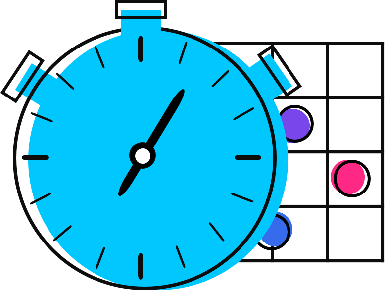

<nav class="navbar navbar-expand-lg navbar-light bg-white">
    <a class="navbar-brand" [routerLink]="['home']">
        
    </a>
    <div *ngIf="!isLoggedIn" class="collapse navbar-collapse" id="navbarNavAltMarkup">
        <div class="navbar-nav">
            <a class="nav-item nav-link" [routerLink]="['home']">Home</a>
            <a class="nav-item nav-link" [routerLink]="['features']">Features</a>
            <a class="nav-item nav-link" [routerLink]="['desktop']">STAT Desktop</a>
            <a class="nav-item nav-link" [routerLink]="['sign-up']">Sign Up</a>
        </div>
    </div>
    <div *ngIf="isLoggedIn" class="collapse navbar-collapse" id="navbarNavAltMarkup">
      <div class="navbar-nav">
        <a class="nav-item nav-link" [routerLink]="['main']">Dashboard</a>
      </div>
  </div>
    <button *ngIf="!isLoggedIn" mat-raised-button color="primary" [routerLink]="['sign-in']">Sign In</button>
    <button class="float-right" *ngIf="isLoggedIn" mat-raised-button color="primary" (click)="open(mymodal)">Sign Out</button>
    <span *ngIf="isLoggedIn" class="proj-member" [routerLink]="['profile']">
      <div  *ngIf="profilePic == 'none'"
            class="pro-pic proj"
            matTooltip="My Profile" 
            matTooltipClass="pro-tooltip"
            matTooltipPosition="below">{{name[0]}}{{surname[0]}}</div>
      
    </span>
</nav>

<!-- sign out modal -->
<ng-template #mymodal let-modal>
    <div class="modal-header">
      <h4 class="modal-title" id="modal-basic-title">Sign Out</h4>
      <button (click)="modal.dismiss('Cross click')">
        <mat-icon>close</mat-icon>
      </button>
    </div>
    <div class="modal-body">
      Are you sure you want to sign out?
    </div>
    <div class="modal-footer">
      <button mat-raised-button color="primary" [routerLink]="['home']" (click)="modal.close('Save click'); logout()">Yes</button>
      <button mat-raised-button color="accent" (click)="modal.close('Save click')">Cancel</button>
    </div>
  </ng-template>
